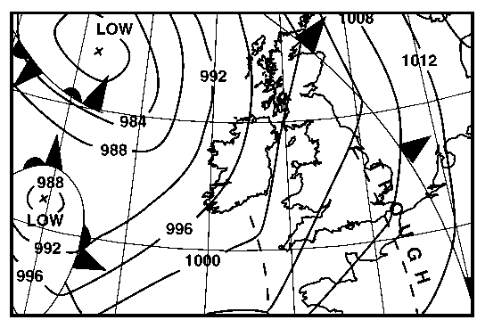
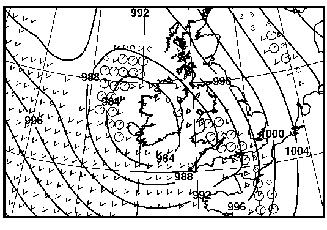
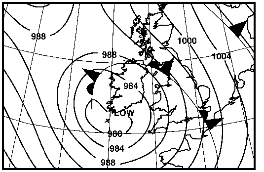

Weather Forecasting: Introduction
A knowledge of what the weather is at present is essential before a forecast can be made of what it is likely to be in the future. Therefore, regular, reliable and accurate measurements are required. These have to be rapidly sent around the world using a telecommunications system dedicated to weather information.
The observations are used to analyse the weather patterns at a particular time. Once the analysis has been carried out, a forecast of the weather pattern can be made. Usually the forecast is made with the aid of a computer. The forecaster uses the output from the computer to decide what the weather will be and to provide services to a wide range of customers.
There are three steps required to make a forecast:
- make observations
- perform an analysis
- produce a forecast.
For example, observations were used to prepare the analysis shown below of mean-sea-level pressure (isobars) and weather fronts at 00 GMT on 25 October 1990

Data from the observations and analysis were entered into the computer model which generated the forecast below for isobars and rain (round symbols indicate continuous rain and the triangular symbols indicate showers) for 00 GMT on 26 October 1990

From this output a forecaster prepared a forecast of isobars and weather fronts for 00 GMT on 26 October 1990

These links give more details about the three stages:
![[Left]](../../pics/left.gif)
![[Up]](../../pics/up.gif)
![[Right]](../../pics/right.gif)
![[Home]](../../pics/home.gif)

James Barrott | jdbarrott@meto.govt.uk | Last updated: 20 November 1995 | © Crown Copyright 1995